Ação do Dia 15
Distribuição de alimentos para comunidades carentes.
Ver DetalhesVoluntária desde Ago. de 2020
Usuária da Voluntarize desde Dez. 2020
Apaixonada por impacto social, Cláudia participa de ações de apoio comunitário, arrecadações e projetos educativos. Ela acredita que pequenas atitudes consistentes podem transformar a rotina de muitas famílias.
Seu trabalho voluntário é marcado por pontualidade, cuidado com as pessoas atendidas e disposição para colaborar em equipes diversas.


Distribuição de alimentos para comunidades carentes.
Ver DetalhesOrganização de kits de apoio e acolhimento comunitário.
Ver DetalhesCláudia foi pontual, cuidadosa e muito comprometida com a ação.
Trabalhou muito bem em equipe e ajudou além do esperado.
Demonstrou empatia e organização durante toda a atividade.